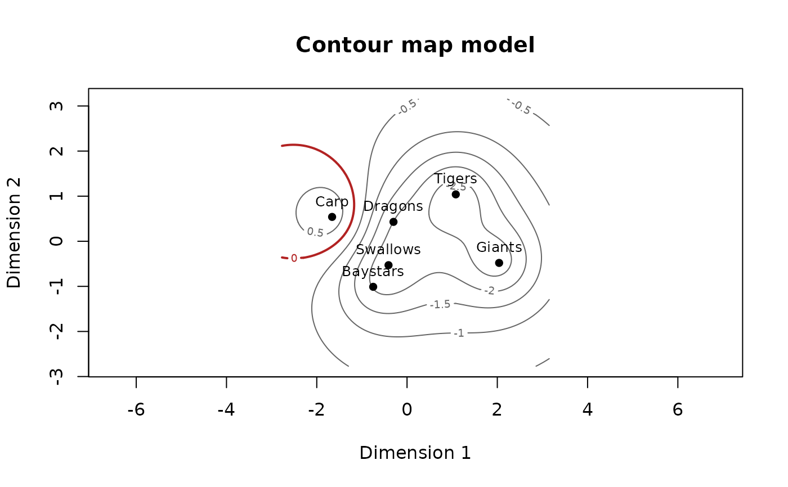
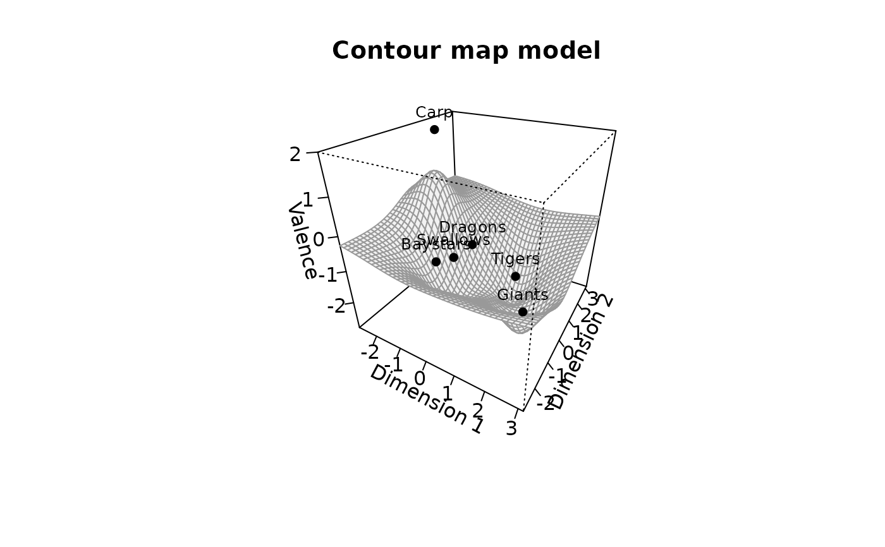

Places evaluations of the objects (for example, liking ratings) on an MDS
configuration as a field of force (Abelson, 1954-55; Kosugi & Fujihara,
2004). With v_j the centered rating of object j and d(P, x_j) the
Euclidean distance from a point P to object j in the configuration, the
valence at P is
V(P) = sum_j v_j / (1 + d(P, x_j)^2).
It is the potential of point charges v_j with d replaced by
1 + d^2, so that it stays finite on the objects. The contour line of
valence 0 divides the space into liked and disliked regions; steep slopes
and several hills are read as tension and as a lack of integration of the
attitude (Abelson, 1954-55).
Arguments
- conf
A configuration (n x p matrix, p >= 2) or an
mdspaceobject, whose$confis used.- ratings
A numeric vector of length n (one person) or a matrix with one row per person and one column per object. When both
ratingsand the configuration have object names, they are matched by name.- center
Value subtracted from the ratings so that 0 is neutral (for example 3 for a five-point scale, as in Kosugi & Fujihara, 2004).
- normalize
Logical; scale the configuration so that the mean squared distance of the objects from their centroid is 1.
Value
An object of class c("mdspace_contour", "mdspace") with
- conf
The configuration used (after
normalize).- ratings
The centered ratings (persons x objects).
- height
The valence at each object (persons x objects).
- discrepancy
ratings - height(persons x objects).- center, normalize
The arguments.
stress and niter are NA because nothing is estimated.
Details
The height of the surface at object j is
V(x_j) = v_j + sum_{k != j} v_k / (1 + d_jk^2), so the discrepancy
v_j - V(x_j) (the "length of the perpendicular" in Kosugi & Fujihara,
2004) is minus the force that the other objects exert on j. It is large
for an object rated in the opposite direction to the objects near it.
The constant 1 in the denominator fixes the unit of length, so the map
depends on the scale of the configuration: enlarging it makes the hills
sharper. By default the configuration is used as given, as in the
original. normalize = TRUE first centers it and scales it so that the
mean squared distance of the objects from their centroid is 1.
Ratings that are NA are left out of the sum (their charge is 0) and
their discrepancy is NA.
References
Abelson, R. P. (1954-55). A technique and a model for multi-dimensional attitude scaling. Public Opinion Quarterly, 18(4), 405-418. doi:10.1086/266533
Kosugi, K., & Fujihara, T. (2004). A technique for mapping attitude by a contour map model. Behaviormetrika (Kodo Keiryogaku), 31(1), 17-24. (in Japanese)
See also
predict.mdspace_contour() for valences at any point,
plot.mdspace_contour() for the contour map and the valence surface.
Examples
conf <- matrix(c(2.04, -0.48, -0.30, 0.43, 1.08, 1.04,
-1.66, 0.54, -0.41, -0.53, -0.75, -1.01),
ncol = 2, byrow = TRUE,
dimnames = list(c("Giants", "Dragons", "Tigers", "Carp",
"Swallows", "Baystars"), NULL))
fit <- contour_mds(conf, c(1, 2, 1, 5, 2, 2), center = 3)
summary(fit)
#> mdspace: contour
#>
#> Configuration:
#> [,1] [,2]
#> Giants 2.04 -0.48
#> Dragons -0.30 0.43
#> Tigers 1.08 1.04
#> Carp -1.66 0.54
#> Swallows -0.41 -0.53
#> Baystars -0.75 -1.01
#>
#> Rating, height and discrepancy:
#> object rating height discrepancy
#> Giants -2 -2.7354 0.7354
#> Dragons -1 -2.0077 1.0077
#> Tigers -2 -2.8423 0.8423
#> Carp 2 0.7889 1.2111
#> Swallows -1 -2.3579 1.3579
#> Baystars -1 -2.0299 1.0299
plot(fit)

plot(fit, type = "persp")
